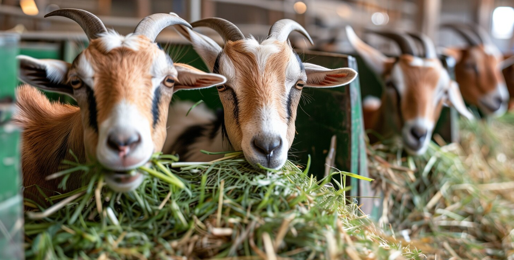

Descubra as ferramentas completas que preparamos para a gestão eficiente da sua propriedade.
Cadastre cada animal com um perfil detalhado. Mantenha o histórico completo de origem, raça, lote, categoria (matrizes, reprodutores, crias) e acompanhe todas as movimentações na propriedade. Nosso sistema unificado permite gerenciar rebanhos mistos de caprinos e ovinos com total facilidade, gerando relatórios automáticos de inventário para facilitar a sua tomada de decisão no dia a dia.
Garanta o bem-estar do seu rebanho com um calendário sanitário inteligente. Receba alertas automáticos de vacinação, vermifugação e exames de rotina. Registre ocorrências clínicas, tratamentos veterinários, custos com medicamentos e acompanhe de perto o período de carência de cada remédio aplicado. A prevenção de doenças e a gestão sanitária da fazenda nunca foram tão simples.
Maximize a taxa de natalidade da sua fazenda. Acompanhe a identificação de cios, registre coberturas (monta natural ou inseminação artificial) e diagnósticos de gestação. O sistema calcula automaticamente a previsão de partos e o período ideal de secagem das matrizes, alertando você sobre as datas mais críticas para garantir o nascimento saudável e seguro de seus cabritos e cordeiros.
Acompanhe o desenvolvimento corporal do seu rebanho registrando pesagens periódicas. Avalie o Ganho de Peso Médio Diário (GMD), planeje dietas específicas por lote e controle o consumo de pastagem, ração e suplementos minerais. Uma nutrição bem ajustada baseada em dados reais melhora a conversão alimentar, reduz desperdícios e aumenta significativamente a rentabilidade da sua produção.